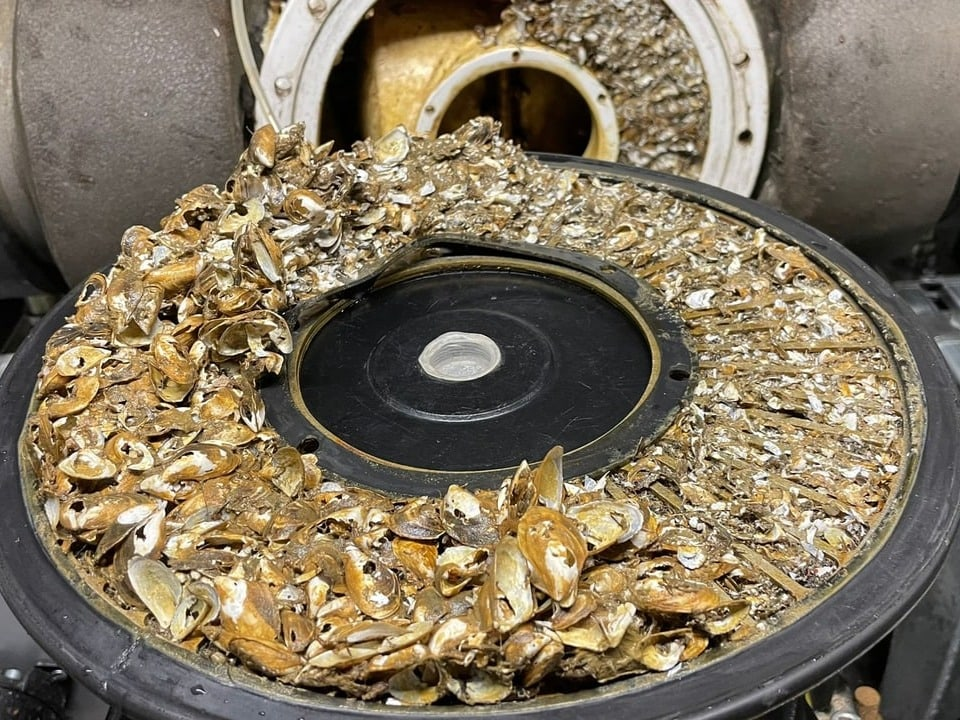
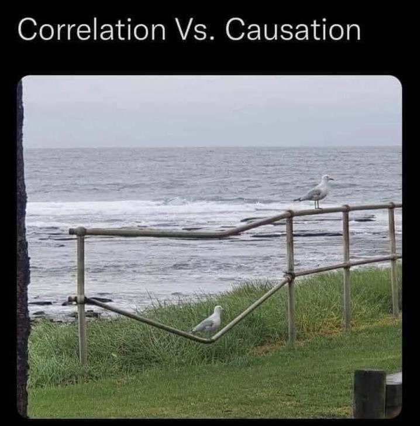
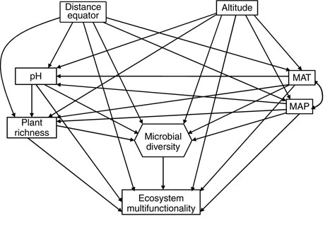
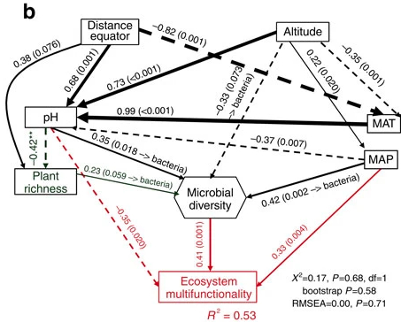

Introduction to path and structural equation modelling
Day 1: Path modelling
Frank Pennekamp
Department of Evolutionary Biology and Environmental Sciences, University of Zurich
November 4, 2026
Quick introduction of participants
- Who are you?
- What is your research question?
- What do you know about path and structural equation modelling already?
General information
Acknowledgements
- Dr. Noémie Pichon, Dr. Fletcher Halliday, Dr. Eliane Meier, Dr. Hugo Saiz, Dr. Debra Zuppinger-Dingley, Rebecca Oester, Annabelle Constance, Fabienne Wiederkehr (course design)
- Dr. Rachel Korn (course development: exercises and solutions)
- Dr. Frank Pennekamp (course development: exercises, solutions and slides, instructor)
Schedule & content
- Day 1:
- General introduction to path modelling for ecological systems (lecture)
- Fitting path models to data (live demo)
- Case study: fitting path models to data (exercises)
- Work on your research question / meta-model (self-study)
- Day 2:
- Constructs: latent and composite variables (lecture)
- Fitting SE models to data (live demo & case study exercises)
- Work on your research question / SE model (self-study)
- Progress update
- Day 3:
- Model visualization (lecture)
- Work on your research question / SE model (self-study)
- Presentation of your SE model and discussion with instructor and peers
Overview
- What the course is about:
- Global estimation of path and SE models with R package lavaan (including latents and composites)
- Hands-on exercises and live coding
- A single ecological dataset for demonstration (Seabloom et al. 2020)
- Develop your own model
- What will not be covered
- Local estimation of path and SE models (with R package piecewiseSEM)
- Advanced topics:
- integrate random effects
- disentangle feedback loops
- dealing with spatial and temporal autocorrelation
Learning objectives
You can:
- translate your research question into a meta-model.
- fit a path or structural equation model with the R package
lavaan. - assess the quality of a fitted model.
- interpret your model and those reported by others.
- present path and SE models graphically.
Understanding (ecological) systems
- Ecological systems characterized by complex causal networks that link environmental gradients, species interactions, and feedback processes across scales
- Understanding these networks requires analyses that go beyond correlations and can disentangle direct and indirect effects.
- Testing hypotheses about specific cause-effect relationships in these networks.
Why is understanding causes important?
- Causes = mechanisms
- Allows us to predict the behaviour of a system
- Justify interventions (e.g., eradication of invasive species, habitat restoration for threatened species)
- Avoid confounding of cause with non-cause (e.g., avoid interventions with no or detrimental effects)

Causality
“Correlation does not imply causation”
- Causation: causing variation in X leading to variation in Y (=X causes Y), everything else being equal.
- Experiments are gold standard to infer causes.
- However, conducting experiments can be unethical or unfeasible.
- Can we learn about causality from observational data?

“Correlation can indicate causation”
A simple correlation implies an unresolved causal structure, since we cannot know which is the cause, which is the effect, or even if both are common effects of some third, unmeasured variable.
Bill Shipley (Cause and correlation in biology, 2004)
- Inferring causes from observations is possible, but requires to rule out confounding.
- What is confounding?
Confounding
Confounding occurs when an outside variable influences both the independent variable (X) and the dependent variable (Y), creating a false impression of a causal relationship between them. This can lead to incorrect conclusions about the nature of the relationship.
Confounding example
Correlation between ice cream sales and cases of drowning are both influenced by temperature (confounder).

Path diagrams
A path diagram specifies putative cause-effect relationships — the data-generating mechanisms that lead to a set of observational expectations.
- Nodes = measured variable (box shape).
- One-headed arrow = causal relationship.
- Double-headed arrow = non-causal relationship.
- Relationships can have any functional shape.
- Omitted links and nodes have empirical implications (= assumptions about the causal diagram).
- U = unmeasured cause.
How do we establish causality?
- Build knowledge from past observation (meta-model)
- Design and conduct an experiment or observational study
- Test hypotheses
- Develop/refine theory
The combination of knowledge of correlations with knowledge of causal relations, to obtain certain results, is a different thing from the deduction of causal relations from correlations.”
Sewall Wright, 1923
The SEM workflow
Evaluates whether the observed data are consistent with a hypothesised causal network, rather than proving causation.
- Build a hypothesized causal diagram

The SEM workflow
Evaluates whether the observed data are consistent with a hypothesised causal network, rather than proving causation.
- Build a hypothesized causal diagram (meta-model)
- Collect data
The SEM workflow
Evaluates whether the observed data are consistent with a hypothesised causal network, rather than proving causation.
- Build a hypothesized causal diagram (meta-model)
- Collect data
- Build SEM and test against data

The SEM workflow
Evaluates whether the observed data are consistent with a hypothesised causal network, rather than proving causation.
- Build a hypothesized causal diagram (meta-model)
- Collect data
- Build SEM and test against data
- Repeat!
Biodiversity-ecosystem functioning


Meta-model:
Multiple regression
- Direct effects of one or more independent variables (X) on a dependent variable (Y).
- Regression coefficient quantifies the direction and strength of relationship (i.e., how much change in Y for one unit change in X).
- Partial regression coefficients when more than one independent variable.
- Strong correlations among predictors may be problematic for interpretation.
Biodiversity-ecosystem functioning
Meta-model:
Path model
model <- '
richness ~ nutrients + disturbance
biomass ~ richness + nutrients + disturbance'
sem(model, data = data)- Simultaneously estimates multiple (regression) equations.
- Allows testing both direct and indirect effects.
- Exogenous variables (independent variables):
- only have out-going paths.
- only have out-going paths.
- Endogenous variables (response variables):
- have in-going and out-going paths.
- have in-going and out-going paths.
Mediation
- Tests whether a particular variable has a mediating effect on a path.
- Often used to test underlying mechanisms.
- In our example, we could ask whether the effect of nutrients on biomass is mediated through biodiversity.
- Possibilities: complete mediation, partial mediation, no mediation.
Motivations to use path model and SE models:
- Driver-focused: Understand how drivers influence a system
- Response-focused: Understand and explain a particular response of a system
- Mediation-focused: Understand underlying causal pathways
- Theory-focused: compare observations of a system to available theory
Path and SE modelling philosophy
- A model should be based on prior evidence / theory (i.e., a meta-model).
- Each path requires explicit justification: make table with expected directions and magnitudes of paths.
- Diagram to specify relationships of actual variables and compare with observed data.
- Make the model as simple as possible: only include paths directly relevant to your research question rather than modelling all possible relationships.
Questions?
Exercise
- Draw a causal diagram of the dataset you want to understand (define nodes and edges).
- Make a table specifying putative causal relationships.
- Of what type is your SEM (response, driver, mediation, theory focused)?
Introduction to path and structural equation modelling (2026)